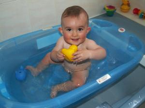

pub_date: 2010-07-11 21:00:00 +01:00
public: yes
tags: ["gwenview","akademy"]
title: "Back from Akademy 2010"
I came back from Akademy 2010 held in the nice town of Tampere, Finland. It was exhilarating and motivating, I really enjoyed it.
I am not going to try to narrate everything precisely, so here is a bullet-point summary, in somewhat chronological order:
- Decided to leave my digital camera at home because I was paranoid about my cabin luggage becoming too heavy for Finnair strict limits (8kg!). Big mistake. I missed it quite a lot.
- Attended lots of interesting talks, including "UI Design for Developers" by Davide Vignoni and Nuno Pinheiro. This talk motivated me to finally add inline renaming to Gwenview.
- Received the "Best application Akademy award" for my work on Gwenview, color me proud! Congratulations to Anne Wilson for the "Non-technical contribution award" and to Burkhard Lück for the "Jury award"!
- Attended my very first KDE e.V. meeting. It went quite well: I have been told finishing on schedule was a recent habit for this meeting.
- Spend way too much time playing Raiden on the MAME cabinet at Demola. It brought back a lot of memories, thanks to whoever set it up! I am thinking about resuming my "install MAME on XBMC box in living room" project...
- Successfully passed the Qt certification test.
- Finally got my port of KAlarm to KStatusNotifierItem (KSNI) committed. This was the last KSNI patch waiting to get in, so I am quite happy to be done with it.
- Promised mock-up to improve KAlarm alert windows, but failed to deliver. Will work on it later.
- Started to use KDevelop after sharing a cab with one of its developers who told me about the powerful magic it came bundled with. I still miss some of my Street-Fighter-like Vim moves, but I like the way KDevelop gives me a more global view of the code. I also like the ultra-powerful code-completion.
- Presented DBusMenu, how it is used in the system tray in KDE SC 4.5 and in the upcoming global menubar which will be part of the next Kubunutu (hopefully it will get into KDE SC for 4.6). Received interesting suggestions to optimize it.
- Created a mock-up for a new "Add widget" user interface for Plasma, which unfortunately got rejected.
- Tried sauna and loved it.
- Played a strange Finnish outdoor game named Mölkky. I am going to build my own to play it again at home.
- Ate way too much sausages, blood sausages and potatoes! Luckily my hotel was not too close from Demola so I could burn a bit of those during the daily 20-minute walk.
- Fixed some layout issues in Plasma Battery applet: The battery in the extender is no longer drawn over the rest of the extender text, even with French translations installed.
- Failed to check my mail. Whenever I am at a developer meeting, I somewhat switch to a "real-life only" mode and tend to completely forget online communication. Happens to me all the time. Unfortunately that habit caused me to miss the closing Indian dinner at TOAS on the last Akademy day.
- Got a nice rubber duck from Nokia. I haven't yet tested the integrated debugger, but I confirm the "keep your toddler busy" feature works quite well, as can be seen here:

All in all it was a blast, and I would like to thank everyone involved in the organization for there awesome work.
{kind=link}
{kind=link}
{kind=link}